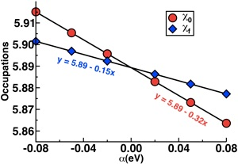
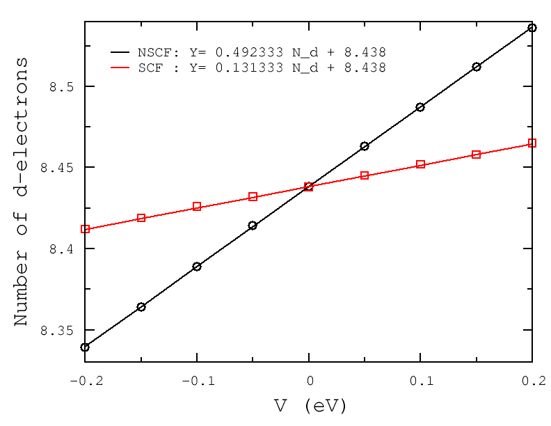

Tuesday, May 31, 2011
If you you think you might be interested in carrying out DFT+U calculations on a system, this tutorial is tailor made for you.
Recall, the DFT+U functional, as implemented in [Quantum-ESPRESSO][2] corresponds to an additional term of the form: E_U=\frac{U}{2}\sum\limits_{I,\sigma}Tr[\bold{n}^{i\sigma}(1-\bold{n}^{i\sigma})] The use of this functional form is particularly motivated by systems consisting of transition-metals with localized electrons (i.e. d or f) that standard DFT struggles to treat accurately.
Before embarking on production level simulations, one of the first things you should always do is to calculate the value of U for your system. In our linear-response U approach[2], the response function that we calculate is: \chi=\frac{\partial{n}{\partial\alpha} with a matrix of response functions in the case of multiple sites but a single value for single site systems. In order to obtain U, we invert the self-consistent response function and subtract out the bare, non-interacting response[2]: U=\chi_0^{-1}-\chi^{-1} Today we will only address the single site example of MnO[3], but a future tutorial will expand the calculation to more manifolds.
The determination of the linear-response U is simple and costs little more than a standard single point energy calculation, which is something you have likely already carried out for the system of interest. Using the scripts provided below, we can easily calculate the linear response U for the sextet ground state of the diatomic molecule MnO.
We obtain the bare and self-consistent response functions from linear regression of the relationship between the occupations that result from a range of rigid potential shifts, alpha:

For sextet MnO, the bare and self-consistent slopes are -0.32 and -0.15, respectively, giving U0 = 3.47 eV.
We determine the linear-response U as follows:
Obtain single point energy at zero alpha and store density.
Starting from 1, obtain new single point energy at several values ofnon-zero alpha (e.g. -0.08 to 0.08) with tight convergence criteria.
Collect occupations from first iteration of 2 for bare response and last iteration of 2 for self-consistent response.
Calculate response functions from linear regression of 3** and invert to obtain U.
The additional single points in step 2 should each take less than half of the time of the original single point in step 1 because the addition of alpha is only a small perturbation. (Note: The key here is to ensure that you can copy over the starting zero-alpha density each time for each non-zero alpha calculation). One approach for the file copying step is implemented in the main script, jobrun.py, and clarified in the variables file, variables.py. The linear regression is carried out after completion of the SCF runs inlinregress.py and the results are written to the file ucalc.dat.
In addition to the standard linear-response U0, the self-consistent extension,Uscf[3], can be determined with these scripts. This approach is carried out automatically by setting a range of values of Uin (e.g. 0.5-3.0 eV in 0.5 eV increments) in the file variables.py.
The linear-response and self-consistent U values are essentially identical for sextet MnO. The self-consistent U is determined from the extrapolation ofUout calculated over a range of Uin where the relationship is linear[2]. Larger differences between the self-consistent and linear-response U values can be much larger, especially where the electronic structure between DFT and DFT+U differs significantly. We have also studied systems from a few to hundreds of atoms in size with self-consistent DFT+U, and I encourage you to read about the research and the relevant publications.
The tutorial files, provided also as a zipped archive here, are:
jobrun.py— skeleton script generates input files and runs jobs.
variables.py — you should change these job and cluster variables!
libraries.py — dictionary of parameters that should not be changed.
linregress.py — calculates U0 and Uscf from results of jobrun.py.
other files — pseudopotentials, coordinates for MnO, a readme file, and an example job script for SGE queues.
I hope that this tutorial has helped you to better understand how to calculate the linear-response and self-consistent Hubbard U for single-site transition metal complexes. Please [email me] if you have any additional questions not answered here!
In this exercise you will calculate the U parameter for the LSDA+U treatment of Ni d-electrons in NiO using the linear response ansatz of Cococcioni et al..[2]
POSCARFor this calculation we will use a 2×2×2 supercell of AFM-II NiO:
AFM NiO
4.03500000
2.0000000000 1.0000000000 1.0000000000
1.0000000000 2.0000000000 1.0000000000
1.0000000000 1.0000000000 2.0000000000
1 15 16
Direct
0.0000000000 0.0000000000 0.0000000000
0.2500000000 0.2500000000 0.2500000000
0.0000000000 0.0000000000 0.5000000000
0.2500000000 0.2500000000 0.7500000000
0.0000000000 0.5000000000 0.0000000000
0.2500000000 0.7500000000 0.2500000000
0.0000000000 0.5000000000 0.5000000000
0.2500000000 0.7500000000 0.7500000000
0.5000000000 0.0000000000 0.0000000000
0.7500000000 0.2500000000 0.2500000000
0.5000000000 0.0000000000 0.5000000000
0.7500000000 0.2500000000 0.7500000000
0.5000000000 0.5000000000 0.0000000000
0.7500000000 0.7500000000 0.2500000000
0.5000000000 0.5000000000 0.5000000000
0.7500000000 0.7500000000 0.7500000000
0.1250000000 0.1250000000 0.1250000000
0.3750000000 0.3750000000 0.3750000000
0.1250000000 0.1250000000 0.6250000000
0.3750000000 0.3750000000 0.8750000000
0.1250000000 0.6250000000 0.1250000000
0.3750000000 0.8750000000 0.3750000000
0.1250000000 0.6250000000 0.6250000000
0.3750000000 0.8750000000 0.8750000000
0.6250000000 0.1250000000 0.1250000000
0.8750000000 0.3750000000 0.3750000000
0.6250000000 0.1250000000 0.6250000000
0.8750000000 0.3750000000 0.8750000000
0.6250000000 0.6250000000 0.1250000000
0.8750000000 0.8750000000 0.3750000000
0.6250000000 0.6250000000 0.6250000000
0.8750000000 0.8750000000 0.8750000000Atoms 1-16 are Ni and atoms 17-32 are O.
Note that the Ni atoms are split into two groups: atom 1, and atom 2-15. This trick breaks the symmetry of the Ni sub-lattice and allows us to treat atom 1 differently from atom 2-15. Our POTCAR file has to reflect the fact that we now formally have 3 "species" (2 ×Ni + 1×O), i.e., we concatenate two Ni POTCAR files and one O POTCAR file:
cat Ni/POTCAR Ni/POTCAR O/POTCAR > POTCAR
To check whether you have a suitable POTCAR type:
grep TITEL POTCAR
This should yield something like:
TITEL = PAW Ni 02Aug2007
TITEL = PAW Ni 02Aug2007
TITEL = PAW O 22Mar2012i.e., two Ni entries followed by one O entry.
Gamma only
0
Monkhorst
1 1 1
0 0 0We will calculate the DFT groundstate of our NiO system with the following INCAR:
SYSTEM = NiO AFM
PREC = A
EDIFF = 1E-6
ISMEAR = 0
SIGMA = 0.2
ISPIN = 2
MAGMOM = 1.0 -1.0 1.0 -1.0 1.0 \
-1.0 1.0 -1.0 1.0 -1.0 \
1.0 -1.0 1.0 -1.0 1.0 \
-1.0 1.0 -1.0 1.0 -1.0 \
16*0.0
LORBIT = 11
LMAXMIX = 4 Instrumental here is that we correctly specify the initial magnetic moments (by means of MAGMOM). The setting above is consistent with the AFM-II magnetic structure: alternating ferromagnetic Ni (111)-layers.
Secondly we set LORBIT=11: at the end of the OUTCAR file VASP will write the number of (d-) electrons per site. This information we will need to compute the U-parameter.
Last but not least, we set LMAXMIX=4: this is needed to be able to perform non-selfconsistent (ICHARG=11) LSDA+U calculations (LDAUTYPE=3) in the following. For this reason we will keep a copy of the CHGCAR file (and the WAVECAR file as well):
cp CHGCAR CHGCAR.0
cp WAVECAR WAVECAR.0The information most relevant to the task at hand you will find near the end of the OUTCARfile:
total charge
total charge
# of ion s p d tot
------------------------------------------
1 0.342 0.490 8.438 9.269
2 0.342 0.490 8.438 9.269
3 0.342 0.490 8.438 9.270
4 0.342 0.490 8.438 9.269
5 0.342 0.490 8.438 9.269
6 0.342 0.490 8.438 9.269
7 0.342 0.490 8.438 9.269
8 0.342 0.490 8.438 9.269
9 0.342 0.490 8.438 9.269
10 0.342 0.490 8.438 9.269
11 0.342 0.490 8.438 9.269
12 0.342 0.490 8.438 9.269
13 0.342 0.490 8.438 9.269
14 0.342 0.490 8.438 9.270
15 0.342 0.490 8.438 9.269
16 0.342 0.490 8.438 9.269
17 1.564 3.455 0.000 5.019
18 1.564 3.455 0.000 5.019
19 1.564 3.455 0.000 5.019
20 1.564 3.455 0.000 5.019
21 1.564 3.455 0.000 5.019
22 1.564 3.455 0.000 5.019
23 1.564 3.455 0.000 5.019
24 1.564 3.455 0.000 5.019
25 1.564 3.455 0.000 5.019
26 1.564 3.455 0.000 5.019
27 1.564 3.455 0.000 5.019
28 1.564 3.455 0.000 5.019
29 1.564 3.455 0.000 5.019
30 1.564 3.455 0.000 5.019
31 1.564 3.455 0.000 5.019
32 1.564 3.455 0.000 5.019
--------------------------------------------------
tot 30.489 63.111 135.011 228.611This shows that in the DFT grounstate 8.438 d-electrons are attributed to atomic site 1.
The next step is to calculate the following response function: \chi_{IJ}^0=\frac{\partial N_I^{NSCF}{\partial V_J}
This is the change in the number of d-electrons on site I due to an additional spherical potential acting on the d-manifold on site J. In the following we will assume this response to be zero unless I=J.
To add an additional spherical potential on the site of atom 1 that acts on the d-manifold we specify the following:
LDAU = .TRUE.
LDAUTYPE = 3
LDAUL = 2 -1 -1
LDAUU = 0.10 0.00 0.00
LDAUJ = 0.10 0.00 0.00Note that for LDAUTYPE=3 the LDAUUand LDAUJ tags specify the strength (in eV) of the spherical potential acting on the spin-up and spin-down d-manifolds, respectively.
In the present step we want to calculate the non-selfconsistent response to this additional potential. This is done by reading in the charge density from the previous DFT groundstate calculations and by keeping it fixed during the electronic minimization procedure:
ICHARG= 11
N.B.: be sure to use the charge density of the DFT groundstate calculation:
cp CHGCAR.0 CHGCAR
cp WAVECAR.0 WAVECARAfter running this calculation you will notice that due to the additional potential the number of d-electrons on atom 1 has changed w.r.t. the DFT groundstate (check the OUTCARfile again):
total charge
# of ion s p d tot
------------------------------------------
1 0.342 0.490 8.488 9.319
2 0.342 0.489 8.432 9.263
3 0.342 0.490 8.438 9.269
4 0.342 0.490 8.438 9.269
5 0.342 0.490 8.438 9.269
6 0.342 0.490 8.438 9.269
7 0.342 0.490 8.435 9.266
8 0.342 0.490 8.438 9.269
9 0.342 0.490 8.438 9.269
10 0.342 0.490 8.438 9.269
11 0.342 0.490 8.435 9.266
12 0.342 0.490 8.438 9.269
13 0.342 0.490 8.435 9.266
14 0.342 0.490 8.438 9.269
15 0.342 0.490 8.430 9.261
16 0.342 0.489 8.432 9.263
17 1.564 3.455 0.000 5.019
18 1.564 3.455 0.000 5.018
19 1.564 3.454 0.000 5.018
20 1.564 3.454 0.000 5.018
21 1.564 3.454 0.000 5.018
22 1.564 3.454 0.000 5.018
23 1.564 3.454 0.000 5.018
24 1.564 3.454 0.000 5.018
25 1.564 3.454 0.000 5.018
26 1.564 3.454 0.000 5.018
27 1.564 3.454 0.000 5.018
28 1.564 3.454 0.000 5.018
29 1.564 3.454 0.000 5.018
30 1.564 3.454 0.000 5.018
31 1.564 3.455 0.000 5.018
32 1.564 3.455 0.000 5.019
--------------------------------------------------
tot 30.488 63.101 135.027 228.617The change in the number of d-electrons on atomic site 1 is found to be: \Delta{N}_1^{NSCF}=4.488−4.438 = 0.050 and hence \chi_{11}^0=\frac{0.050}{0.1}=0.5\ eV^{-1}
The selfconsistent reponse function: \chi_{IJ}^0=\frac{\partial N_I^{SCF}}{\partial V_J}
is computed in a similar manner:
LDAU = .TRUE.
LDAUTYPE = 3
LDAUL = 2 -1 -1
LDAUU = 0.10 0.00 0.00
LDAUJ = 0.10 0.00 0.00N.B.I: The only difference between this calculation and the previous calculation of the non-selfconsistent response is that now we do not set ICHARG=11, i.e, now the charge density may change.
N.B.II: To speed things up it is a good idea to restart this calculation from the WAVECAR file of the previous non-selfconsistent response calculation.
After this calculation has finished you should again inspect the number of d-electrons on atomic site 1:
total charge
# of ion s p d tot
------------------------------------------
1 0.341 0.488 8.452 9.281
2 0.342 0.490 8.438 9.269
3 0.342 0.490 8.438 9.269
4 0.342 0.490 8.438 9.269
5 0.342 0.490 8.438 9.269
6 0.342 0.490 8.438 9.269
7 0.342 0.490 8.438 9.269
8 0.342 0.490 8.438 9.269
9 0.342 0.490 8.438 9.269
10 0.342 0.490 8.438 9.269
11 0.342 0.490 8.438 9.269
12 0.342 0.490 8.438 9.269
13 0.342 0.490 8.438 9.269
14 0.342 0.490 8.438 9.269
15 0.342 0.490 8.438 9.269
16 0.342 0.490 8.438 9.269
17 1.564 3.455 0.000 5.019
18 1.564 3.455 0.000 5.019
19 1.564 3.455 0.000 5.018
20 1.564 3.455 0.000 5.019
21 1.564 3.455 0.000 5.018
22 1.564 3.455 0.000 5.019
23 1.564 3.455 0.000 5.019
24 1.564 3.455 0.000 5.018
25 1.564 3.455 0.000 5.018
26 1.564 3.455 0.000 5.019
27 1.564 3.455 0.000 5.019
28 1.564 3.455 0.000 5.018
29 1.564 3.455 0.000 5.019
30 1.564 3.455 0.000 5.018
31 1.564 3.455 0.000 5.019
32 1.564 3.455 0.000 5.019
--------------------------------------------------
tot 30.488 63.107 135.022 228.617The change in the number of d-electrons on atomic site 1 is found to be: \Delta{N}_1^{NSCF}=4.452 − 4.438 = 0.012 and hence \chi_{11}^0=\frac{0.012}{0.1}=0.12\ eV^{-1}
After we have computed both the non-selfconsistent as well as the selfconsistent response functions, the U parameter for the LSDA+U treatment of Ni d-electrons in NiO is found from:
U=\chi^{-1}-\chi_{0}^{-1}\approx (\frac{\partial N_{I}^{SCF}}{\partial V_{I}})^{-1}- (\frac{\partial N_{I}^{NSCF}}{\partial V_{I}})^{-1} =\frac{1}{0.12}-\frac {1}{0.5}=6.33\ eV
To get a more accurate result one should repeat the previous calculations for a series of different additional potentials (for instance LDAUU=LDAUJ= -0.2, -0.15, -0.10, -0.05, 0.05, 0.10 ,0.15, and 0.20 eV). All necessary steps are scripted in doall.sh in the tgz-file below.
The relevant response functions are then easily found from a linear fit of the number of d-electrons on atomic site 1 as a function of the additional potential V:

From the above we then have: U=\chi^{-1}-\chi_{0}^{-1}\approx (\frac{\partial N_{I}^{SCF}}{\partial V_{I}})^{-1}- (\frac{\partial N_{I}^{NSCF}}{\partial V_{I}})^{-1} =\frac{1}{0.13133}-\frac {1}{0.49233}=5.58\ eV
| Species | U | J | U－J(Ueff) |
|---|---|---|---|
| CaCuO3 | 7.5 | 0.98 | 6.5 |
| NiO | 8.0 | 0.95 | 7.1 |
| CoO | 7.8 | 0.92 | 6.9 |
| FeO | 6.8 | 0.89 | 5.9 |
| MnO | 6.9 | 0.86 | 10.3 |
| VO | 6.7 | 0.81 | 5.9 |
| TiO | 6.6 | 0.78 | 5.8 |
The U values were obtained by fitting to experimental binary formation enthalpies as described in Wang et al.'s work, which is simple and accurately reproduces phase stabilities. A least squares method of obtaining the correct U value was used, as follows:
The full list of U values used is described in the table below. For oxide containing any of the elements, both GGA and GGA+U calculations were performed.
| Element | System | Fitting Reaction | Redox Couple | Calibrated U (eV) | Comments |
|---|---|---|---|---|---|
| Co | Oxides | 6 CoO + O2 → 2 Co3O4 | Co2+ → Co2.67+ | 3.32 | |
| Cr | Oxides | 2/3 Cr2O3 + O2 → 4/3 CrO3 | Cr3+ → Cr6+ | 3.7 | |
| Fe | Oxides | 6 FeO + O2 → 2 Fe3O4 4 Fe3O4 + O2 → 6 Fe2O3 |
Fe2+ → Fe2.67+ Fe2.67+ → Fe3+ |
5.3 | |
| Mn | Oxides | 6 MnO + O2 → 2 Mn3O4 Mn3O4 + O2 → 3 MnO2 |
Mn2+ → Mn2.67+ Mn2.67+ → Mn4+ |
3.9 | Mn2O3 was explicitly excluded from calibration set due to the large number of atoms in its unit cell. |
| Mo | Oxides | 2 MoO2 + O2 → 2 MoO3 | Mo4+ → Mo6+ | 4.38 | |
| Ni | Oxides | Li2O + NiO + O2 → LiNiO2 | Ni2+ → Ni3+ | 6.2 | Binary formation energies are not readily available for the Ni. The Ni U calibration was performed using a ternary oxide formation energy.[5] |
| V | Oxides | 2 V2O3 + O2 → 4 VO2 4 VO2 + O2 → 2 V2O5 |
V3+ → V4+ V4+ → V5+ |
3.25 | VO was explicitly excluded from calibration set due to its known metallic nature. |
| W | Oxides | 2 WO2 + O2 → 2 WO3 | W4+ → W6+ | 6.2 |
The U values are calibrated for phase stability analyses, and should be used with care if applied to obtain other properties such as band structures. Also, the U values depend on the pseudopotential used. A discussion of the pseudopotentials used in the Materials Project can be found here.